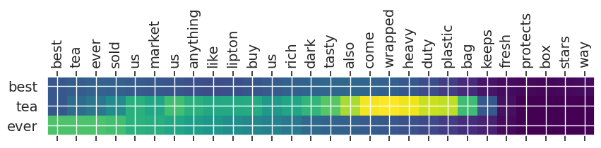

Objective
The objective of this project is to build a model that can create relevant summaries for reviews written about food and gourmet sold on Amazon. Review data was obtained from Stanford Large Network Dataset Collection. The raw data include ~1 million reviews of food from Amazon.
Table of Contents
- Introduction
- Overview of text summarization
- Introduction to Abstractive Summarization Using Sequence-to-Sequence Modeling
- Implementing a Text Summarization seq2seq Model in Python
- Data Preprocessing
- Data Inspection
- Removing irrelevant features
- Finding and removing null values
- Exploring the reviews
- Data Preparation
- Text Cleaning
- Sentence Length Distribution
- Removing short text and summaries
- Data tokenization and vectorization
- Word Embeddings
- Model Building
- Post Processing
- Removing irrelevant features
- removing potential
nullvalues from data - Adding text contractions
- Cleaning the text by removing unwanted characters
The main goal of summarization can be described as representing the gist of a text in a few words that carry the main idea and important information from the text. One common example is the new headlines. Summaries can be short or long. News headlines are good examples of short summaries where they usually contain a few words and journal article abstracts are good examples for long summaries where they can be as long as a few sentences.
Overview of text summarization
The traditional way of summarizing a text works like highlighting the important parts of the text before getting prepared for an exam. We would basically highlight the parts of the text that we think are more important so that we spend less time going over the material the next time we read the text. This can save a lot of time specially if we're dealing with a lot of material to read! The traditional approach to summarization is called Extraction-based summarization.
With the emergence of deep learning models and subsequently the seq2seq architecture, a new way of summarizing the text was introduced that works very differently compared to the traditional way. Seq2seq model was first introduced in 2014 by Google, where the model first transforms the input (text) to a fixed-length sequence, and eventually maps it to a fixed-length output sequence (summary).
The idea is no longer trying to only highlight the parts of the text and eventually put those pieces together to build the summary. Instead, the model will try to generate a new piece of text once it has a good understanding of the meaning of the words that are used in the article. This is called Abstractive Summarization. We can think of it as a model that is trying to transform the input sequence of tokens into a limited set of output tokens that carry the core idea about the input tokens. The amount of tokens in the output sequence is learned by the model during the training phase where we need to provide both the text and summary, therefore, abstractive summarization falls into the suprevised learning category.
Introduction to Abstractive Summarization Using Sequence-to-Sequence Modeling
In the context of text summarization, the seq2seq model takes and input sequence of words, where each word is represeneted as an integer token, and returns an output sequence of tokens that form the summary. There are different variations of seq2seq model and this project focuses on the many-to-many Seq2Seq problem where the model maps many input tokens (text) into many output tokens (summary). The seq2seq model has two main components, namely, an encoder and a decoder. I will try to explain the main properties of the two components in the following but the full details and specifically the math derivations are outside the scope of this project. However, along the way, I will add the references that I found useful for understanding the math!
Encoder-Decoder Model
The main reason behind using an Encoder-Decoder architecture is that the input and output sequences are not necessarily of the same lenghts. The input sequence is typically a long sequence of words whereas the output contains only a few words.
Building Blocks of the Model
Both the encoder and decoder take advantage of a variant of Recurrent Neural Networks (RNNs), usually a Long Short Term Memory (LSTM) unit or a Gated Recurrent Unit (GRU). The reason behind using this specific RNNs is that they can learn long-term dependencies, which is something the regular RNNs fail to achieve.
RNNs are appealing because they can, at least in theory, connect previous information to the present information. However, as the time gap between the past and present information becomes large (the input sentence becomes long), RNNs fail to learn such dependencies due to the problem of vanishing gradients. LSTMs are designed to remedy the long-term dependency issue.
Training and Inference Phases
During the task of text summarization, the encoder-decoder architecture experiences two phases, the training and inference phases. In the training phase, the model is trained to predict the target sequence offset by one timestep, i.e., when word X appears, what word is most likely to appear afterwards. In the inference phase, we essentially test the model to see what it returns as we feed an input sequence to the model.
I will provide more details about the details of each component during the model implementation so let's start!
Implementing a Text Summarization seq2seq Model in Python
Data Preprocessing
Data proprocessing is an essential step of this projects because using uncleaned text data can lead to a bad model and a lot of wasted time and computational power! Text preprocessing step includes:
import pandas as pd
import numpy as np
import re
from nltk.corpus import stopwords
import time
import tensorflow as tf
from bs4 import BeautifulSoup
import seaborn as sns
import matplotlib.pyplot as plt
import warnings
warnings.filterwarnings('ignore')
from matplotlib import rc, rcParams
from matplotlib import cm as cm
import matplotlib.ticker as ticker
Insepcting the Data
reviews = pd.read_json('review_data/Grocery_and_Gourmet_Food.json', lines = True, nrows=1000000)
reviews.head()
| overall | verified | reviewTime | reviewerID | asin | reviewerName | reviewText | summary | unixReviewTime | vote | image | style |
|---|---|---|---|---|---|---|---|---|---|---|---|
| 5 | True | 06 4, 2013 | ALP49FBWT4I7V | 1888861614 | Lori | Very pleased with my purchase. Looks exactly l... | Love it | 1370304000 | NaN | NaN | NaN |
| 4 | True | 05 23, 2014 | A1KPIZOCLB9FZ8 | 1888861614 | BK Shopper | Very nicely crafted but too small. Am going to... | Nice but small | 1400803200 | NaN | NaN | NaN |
| 4 | True | 05 9, 2014 | A2W0FA06IYAYQE | 1888861614 | daninethequeen | still very pretty and well made...i am super p... | the "s" looks like a 5, kina | 1399593600 | NaN | NaN | NaN |
| 5 | True | 04 20, 2014 | A2PTZTCH2QUYBC | 1888861614 | Tammara | I got this for our wedding cake, and it was ev... | Would recommend this to a friend! | 1397952000 | NaN | NaN | NaN |
| 4 | True | 04 16, 2014 | A2VNHGJ59N4Z90 | 1888861614 | LaQuinta Alexander | It was just what I want to put at the top of m... | Topper | 1397606400 | NaN | NaN | NaN |
Removing irrelevant features
reviews = reviews.drop(
['reviewerID', 'asin', 'reviewerName', 'reviewTime', 'verified', 'overall', 'unixReviewTime', 'style', 'image', 'vote'], 1
)
reviews = reviews.reset_index(drop=True)Finding and removing null values
reviews.isnull().sum()
reviewText 433 summary 234 dtype: int64
reviews = reviews.dropna()
# sanity check!
reviews.isnull().sum()
reviewText 0 summary 0 dtype: int64
reviews.columns = ['text', 'summary']
Exploring the reviews
for i in range(10,15):
print(f"Review #{i+1}: {reviews.text[i]}")
print(f"Review #{i+1} summary: {reviews.summary[i]}\n")
Review #11: This arrived in the mail and it was packaged so well so it doesn't break. It's so pretty and well worth my money! Can't wait to use it on my wedding cake :D Review #11 summary: So pretty Review #12: No adverse comment. Review #12 summary: Five Stars Review #13: These are hard to find locally and Amazon has it for a good price. I first tasted this tea in Costa Rica and loved it. Review #13 summary: Wonderful tea and great price too! Review #14: Best black tea in US. Highly recommend. I use 3 bags in a large 16 oz glass mug with boiled water then add boiled milk & sugar. Oh my, it's wonderful. I wish I could drink it at night. Review #14 summary: Best black tea in US Review #15: if you like strong flavorful tea you will enjoy this Yellow Label Review #15 summary: Five Stars
Text Contractions
Next, to avoid headaches caused by text contractions, we need to expand them (the list was obtained from here)!
contractions = {
"ain't": "is not",
"aren't": "are not",
"can't": "cannot",
"'cause": "because",
"could've": "could have",
"couldn't": "could not",
"didn't": "did not",
"doesn't": "does not",
"don't": "do not",
"hadn't": "had not",
"hasn't": "has not",
"haven't": "have not",
"he'd": "he would",
"he'll": "he will",
"he's": "he is",
"how'd": "how did",
"how'd'y": "how do you",
"how'll": "how will",
"how's": "how is",
"I'd": "I would",
"I'd've": "I would have",
"I'll": "I will",
"I'll've": "I will have",
"I'm": "I am",
"I've": "I have",
"i'd": "i would",
"i'd've": "i would have",
"i'll": "i will",
"i'll've": "i will have",
"i'm": "i am",
"i've": "i have",
"isn't": "is not",
"it'd": "it would",
"it'd've": "it would have",
"it'll": "it will",
"it'll've": "it will have",
"it's": "it is",
"let's": "let us",
"ma'am": "madam",
"mayn't": "may not",
"might've": "might have",
"mightn't": "might not",
"mightn't've": "might not have",
"must've": "must have",
"mustn't": "must not",
"mustn't've": "must not have",
"needn't": "need not",
"needn't've": "need not have",
"o'clock": "of the clock",
"oughtn't": "ought not",
"oughtn't've": "ought not have",
"shan't": "shall not",
"sha'n't": "shall not",
"shan't've": "shall not have",
"she'd": "she would",
"she'd've": "she would have",
"she'll": "she will",
"she'll've": "she will have",
"she's": "she is",
"should've": "should have",
"shouldn't": "should not",
"shouldn't've": "should not have",
"so've": "so have",
"so's": "so as",
"this's": "this is",
"that'd": "that would",
"that'd've": "that would have",
"that's": "that is",
"there'd": "there would",
"there'd've": "there would have",
"there's": "there is",
"here's": "here is",
"they'd": "they would",
"they'd've": "they would have",
"they'll": "they will",
"they'll've": "they will have",
"they're": "they are",
"they've": "they have",
"to've": "to have",
"wasn't": "was not",
"we'd": "we would",
"we'd've": "we would have",
"we'll": "we will",
"we'll've": "we will have",
"we're": "we are",
"we've": "we have",
"weren't": "were not",
"what'll": "what will",
"what'll've": "what will have",
"what're": "what are",
"what's": "what is",
"what've": "what have",
"when's": "when is",
"when've": "when have",
"where'd": "where did",
"where's": "where is",
"where've": "where have",
"who'll": "who will",
"who'll've": "who will have",
"who's": "who is",
"who've": "who have",
"why's": "why is",
"why've": "why have",
"will've": "will have",
"won't": "will not",
"won't've": "will not have",
"would've": "would have",
"wouldn't": "would not",
"wouldn't've": "would not have",
"y'all": "you all",
"y'all'd": "you all would",
"y'all'd've": "you all would have",
"y'all're": "you all are",
"y'all've": "you all have",
"you'd": "you would",
"you'd've": "you would have",
"you'll": "you will",
"you'll've": "you will have",
"you're": "you are",
"you've": "you have"
}Text Cleaning
def clean_text(text, remove_stopwords = True):
'''Remove unwanted characters, stopwords, and format the text to create fewer nulls word embeddings'''
# Convert to lower case
text = text.lower()
# take advantage of bs lxml parser
text = BeautifulSoup(text, "html.parser").text
# Fix contractions
tokens = text.split()
new_tokens = []
for token in tokens:
if token in contractions:
new_tokens.append(contractions[token])
else:
new_tokens.append(token)
text = " ".join(new_tokens)
# Format words and remove unwanted characters
text = re.sub(r'https?:\/\/.*[\r\n]*', '', text, flags=re.MULTILINE)
text = re.sub(r'\<a href', ' ', text)
text = re.sub(r'&', '', text)
text = re.sub(r'[_"\-;%()|+&=*%.,!?:#$@\[\]/]', ' ', text)
text = re.sub(r'<br />', ' ', text)
text = re.sub(r'\'', ' ', text)
text = re.sub("(\\t)", ' ', text) #remove escape charecters
text = re.sub("(\\r)", ' ', text)
text = re.sub("(\\n)", ' ', text)
text = re.sub("(__+)", ' ', text) #remove _ if it occors more than one time consecutively
text = re.sub("(--+)", ' ', text) #remove - if it occors more than one time consecutively
text = re.sub("(~~+)", ' ', text) #remove ~ if it occors more than one time consecutively
text = re.sub("(\+\++)", ' ', text) #remove + if it occors more than one time consecutively
text = re.sub("(\.\.+)", ' ', text) #remove . if it occors more than one time consecutively
text = re.sub(r"[<>()|&©ø\[\]\'\",;?~*!]", ' ', text) #remove <>()|&©ø"',;?~*!
text = re.sub("(mailto:)", ' ', text) #remove mailto:
text = re.sub(r"(\\x9\d)", ' ', text) #remove \x9* in text
text = re.sub("([iI][nN][cC]\d+)", 'INC_NUM', text) #replace INC nums to INC_NUM
text = re.sub("([cC][mM]\d+)|([cC][hH][gG]\d+)", 'CM_NUM', text) #replace CM# and CHG# to CM_NUM
text = re.sub("(\.\s+)", ' ', text) #remove full stop at end of words(not between)
text = re.sub("(\-\s+)", ' ', text) #remove - at end of words(not between)
text = re.sub("(\:\s+)", ' ', text) #remove : at end of words(not between)
text = re.sub("(\s+.\s+)", ' ', text) #remove any single charecters hanging between 2 spaces
# Optionally, remove stop words
if remove_stopwords:
text = text.split()
stops = set(stopwords.words("english"))
text = [w for w in text if not w in stops]
text = " ".join(text)
return text
Although care must be taken when dealing with stopwords, specially in NLP applications such as sentiment analysis, this is not a concern in this project because they do not provide much use for training our model. However, we will keep them for our summaries so that they sound more like natural phrases.
import time
clean_texts = []
start = time.time()
for i,text in enumerate(reviews.text):
clean_texts.append(clean_text(text))
if not (i+1)%100000:
print(f"{(i+1)} reviews are cleaned! time elapsed so far: {(time.time() - start):.1f} seconds!")
print(f"Reviews are cleaned! total time elapsed to clean: {(time.time() - start):.1f} seconds!")
print("\n")
clean_summaries = []
start = time.time()
for i,summary in enumerate(reviews.summary):
clean_summaries.append(clean_text(summary, remove_stopwords=False))
if not (i+1)%100000:
print(f"{(i+1)} summaries are cleaned! time elapsed so far: {(time.time() - start):.1f} seconds!")
print(f"Summaries are cleaned! total time spent to clean: {(time.time() - start):.1f} seconds!")
100000 reviews are cleaned! time elapsed so far: 54.0 seconds! 200000 reviews are cleaned! time elapsed so far: 108.0 seconds! 300000 reviews are cleaned! time elapsed so far: 163.2 seconds! 400000 reviews are cleaned! time elapsed so far: 218.2 seconds! 500000 reviews are cleaned! time elapsed so far: 273.4 seconds! 600000 reviews are cleaned! time elapsed so far: 327.6 seconds! 700000 reviews are cleaned! time elapsed so far: 384.7 seconds! 800000 reviews are cleaned! time elapsed so far: 441.6 seconds! 900000 reviews are cleaned! time elapsed so far: 496.1 seconds! Reviews are cleaned! total time elapsed to clean: 550.9 seconds! 100000 summaries are cleaned! time elapsed so far: 11.0 seconds! 200000 summaries are cleaned! time elapsed so far: 22.1 seconds! 300000 summaries are cleaned! time elapsed so far: 33.1 seconds! 400000 summaries are cleaned! time elapsed so far: 44.1 seconds! 500000 summaries are cleaned! time elapsed so far: 55.1 seconds! 600000 summaries are cleaned! time elapsed so far: 66.1 seconds! 700000 summaries are cleaned! time elapsed so far: 77.1 seconds! 800000 summaries are cleaned! time elapsed so far: 88.1 seconds! 900000 summaries are cleaned! time elapsed so far: 99.1 seconds! Summaries are cleaned! total time spent to clean: 110.0 seconds!
# Sanity check to make sure they are actually cleaned
for i in range(5):
print(f"Cleaned Review #{i+1}: {clean_texts[i]}")
print(f"Cleaned Summary #{i+1}: {clean_summaries[i]}\n")
Cleaned Review #1: pleased purchase looks exactly like picture look great cake definitely sparkle
Cleaned Summary #1: love it
Cleaned Review #2: nicely crafted small going add flowers something compensate size
Cleaned Summary #2: nice but small
Cleaned Review #3: still pretty well made super picky listen whispers look like number
Cleaned Summary #3: the looks like 5 kina
Cleaned Review #4: got wedding cake everything even person would recommend anyone
Cleaned Summary #4: would recommend this to friend
Cleaned Review #5: want put top wedding cake love true picture
Cleaned Summary #5: topper
data=pd.DataFrame({'text':clean_texts,'summary':clean_summaries})
data.head()| text | summary |
|---|---|
| pleased purchase looks exactly like picture lo... | love it |
| nicely crafted small going add flowers somethi... | nice but small |
| still pretty well made super picky listen whis... | the looks like 5 kina |
| got wedding cake everything even person would ... | would recommend this to friend |
| want put top wedding cake love true picture | topper |
import pickle
f = open("clean_texts.pkl", "rb")
clean_texts = pickle.load(f)
f.close()
f = open("clean_summaries.pkl", "rb")
clean_summaries = pickle.load(f)
f.close()
data=pd.DataFrame({'text':clean_texts,'summary':clean_summaries})
data.head()| text | summary |
|---|---|
| pleased purchase looks exactly like picture lo... | love it |
| nicely crafted small going add flowers somethi... | nice but small |
| still pretty well made super picky listen whis... | the looks like 5 kina |
| got wedding cake everything even person would ... | would recommend this to friend |
| want put top wedding cake love true picture | topper |
Sentence Length Distribution
Next, we analyze the length of the text and summary to get an overall idea about the distribution of length of the text. This can help us decide on the maximum length of both the review texts and summaries.
sns.set_style('white')
fig, axes = plt.subplots(2, 1, figsize=(10, 10), dpi=80)
axes = axes.flatten()
plt.subplots_adjust(hspace=0.35)
sns.set(font_scale=1.5)
sns.despine()
entities = ["text", "summary"]
colors = ["teal", "orange"]
for i, entity in enumerate(entities):
sns.distplot(data[entity].apply(lambda x: len(x.split())), color=colors[i], ax=axes[i], label=entities[i])
axes[i].set_xlabel("Number of words in the sentence")
axes[i].legend(loc='best')
plt.suptitle('Sentence length distributions before removing short reviews');
Removing short text and summaries
The are a lot of long review texts that can negatively influence the model behavior. I set the following thresholds to remove the text and summary instances from the original data:
text_max_num_words = 150summary_max_num_words = 20text_min_num_words = 25summary_min_num_words = 2
data['text_word_count'] = data['text'].apply(lambda x: len(x.strip().split()))
data['summary_word_count'] = data['summary'].apply(lambda x: len(x.strip().split()))
data.head()| text | summary | text_word_count | summary_word_count |
|---|---|---|---|
| pleased purchase looks exactly like picture lo... | love it | 11 | 2 |
| nicely crafted small going add flowers somethi... | nice but small | 9 | 3 |
| still pretty well made super picky listen whis... | the looks like 5 kina | 11 | 5 |
| got wedding cake everything even person would ... | would recommend this to friend | 9 | 5 |
| want put top wedding cake love true picture | topper | 8 | 1 |
text_max_num_words = 150
summary_max_num_words = 20
text_min_num_words = 25
summary_min_num_words = 2
data = data[(data.text_word_count>text_min_num_words)
& (data.text_word_count<text_max_num_words)
& (data.summary_word_count>summary_min_num_words)
& (data.summary_word_count<summary_max_num_words)
]
data = data.drop(
['text_word_count', 'summary_word_count'], 1
)Now we can take a look at the resulting data that meet the length thresholds we prevoiusly defined.
sns.set_style('white')
fig, axes = plt.subplots(2, 1, figsize=(10, 10), dpi=80)
axes = axes.flatten()
plt.subplots_adjust(hspace=0.35)
sns.set(font_scale=1.5)
sns.despine()
entities = ["text", "summary"]
colors = ["teal", "orange"]
for i, entity in enumerate(entities):
sns.distplot(data[entity].apply(lambda x: len(x.strip().split())),
color=colors[i], ax=axes[i], label=entities[i], bins=16)
axes[i].set_xlabel("word count")
axes[i].legend(loc='best')
plt.suptitle('Sentence length distributions after removing short reviews');
Data tokenization and vectorization
Adding special tokens
There are the special tokens used in seq2seq (image from here):
START- the same as start on the picture below - the first token which is fed to the decoder along with the thought vector in order to start generating tokens of the summary.END- "end of sentence" - the same as end on the picture below - as soon as decoder generates this token we consider the summary to be complete (you can't use usual punctuation marks for this purpose cause their meaning can be different)
start_token = 'starttoken'
end_token = 'endtoken'
data['summary'] = data['summary'].apply(lambda x : start_token + ' ' + x + ' ' + end_token)
data = data.reset_index(drop=True)
data.head()| text | summary |
|---|---|
| tried overseas last year remember exactly sinc... | starttoken yellow label lipton tea endtoken |
| first came across lipton yellow label tea trip... | starttoken a great tea endtoken |
| first tasted caracas business trip south ameri... | starttoken best black tea endtoken |
| best tea ever first france readily available e... | starttoken best tea ever nothing like the ame... |
| wow new flavor block real tea looking received... | starttoken wow this is outstanding endtoken |
Data Split to train and validatiaon
Next I split the data into train and validation sets where 90% of the data is used for training and the rest for validation.
from sklearn.model_selection import train_test_split
indices = np.arange(len(data['text']))
x_tr, x_val, y_tr, y_val, tr_indices, val_indices = train_test_split(
data['text'],
data['summary'],
indices,
test_size=0.1,
random_state=1
)Vocabulary Size
Vocabulary size is one of the important parameters the we need to know when building the model. It determines the size of input data that we feed to the encoder.
def count_words(count_dict, text):
'''Count the number of occurrences of each word in a set of text'''
for sentence in text:
for word in sentence.split():
count_dict[word] = count_dict.get(word, 0) + 1
word_count_dict = {}
count_words(word_count_dict, x_tr)
print("Size of vocabulary train (text):", len(word_count_dict))
text_wc = len(word_count_dict)
count_words(word_count_dict, y_tr)
print("Size of vocabulary train (summary):", len(word_count_dict) - text_wc)
print("Size of vocabulary train (text + review):", len(word_count_dict)) Size of vocabulary train (text): 65923
Size of vocabulary train (summary): 2230
Size of vocabulary train (text + review): 68153
Text Tokenizer
from keras.preprocessing.text import Tokenizer
from keras.preprocessing.sequence import pad_sequences
# Tokenizer for review texts
text_tokenizer = Tokenizer()
text_tokenizer.fit_on_texts(x_tr)# needs to be present at least 5 times so that we dont consider it rare
text_rare_min_count=4
unique_rare_word_count=0
unique_word_count=0
num_rare_word_used=0
num_word_used=0
for word, count in text_tokenizer.word_counts.items():
unique_word_count += 1
num_word_used += count
if count < text_rare_min_count:
unique_rare_word_count += 1
num_rare_word_used += count
print(f"number of unique words is {unique_word_count:d}",
f"\nand number unique rare words is {unique_rare_word_count}")
print("unique rare word to uniqe word ratio in all review texts = {:.2f}".format(
(unique_rare_word_count/unique_word_count)*100)
)
print("rare word usage percentage in all review texts = {:.2f}%".format(
(num_rare_word_used/num_word_used)*100)
) number of unique words is 65770
and number unique rare words is 38717
unique rare word to uniqe word ratio in all review texts = 58.87
rare word usage percentage in all review texts = 0.80%
# Tokenizer for review texts
text_tokenizer = Tokenizer(num_words=unique_word_count-unique_rare_word_count+1)
text_tokenizer.fit_on_texts(x_tr)
# convert text sequences into integer sequences
x_tr_seq = text_tokenizer.texts_to_sequences(x_tr)
x_val_seq = text_tokenizer.texts_to_sequences(x_val)
# padding zero upto maximum length
x_tr = pad_sequences(x_tr_seq, maxlen=text_max_num_words, padding='post')
x_val = pad_sequences(x_val_seq, maxlen=text_max_num_words, padding='post')words = list(text_tokenizer.index_word.values())
i = 0
while text_tokenizer.word_counts[words[i]] >= text_rare_min_count:
i += 1
print(f"dictionary has {i} words that appear more than the minimum threshold")dictionary has 27053 words that appear more than the minimum threshold
# Sanity check
print(words[i-1],text_tokenizer.word_counts[words[i-1]])
print(words[i-1],text_tokenizer.texts_to_sequences([words[i-1]]))
print(words[i],text_tokenizer.word_counts[words[i]])
print(words[i],text_tokenizer.texts_to_sequences([words[i]])) mezzomix 4
mezzomix [[27053]]
rissoto 3
rissoto [[]]
text_vocab_size = text_tokenizer.num_words
print(f"text_vocab_size: {text_vocab_size}")text_vocab_size: 27054
Summary Tokenizer
# Tokenizer for review summaries
summary_tokenizer = Tokenizer()
summary_tokenizer.fit_on_texts(y_tr)
# needs to be present at least 6 times so that we dont consider it rare
summary_rare_min_count=6
unique_rare_word_count=0
unique_word_count=0
num_rare_word_used=0
num_word_used=0
for word, count in summary_tokenizer.word_counts.items():
unique_word_count += 1
num_word_used += count
if count < text_rare_min_count:
unique_rare_word_count += 1
num_rare_word_used += count
print(f"number of unique words is {unique_word_count:d}",
f"\nand number unique rare words is {unique_rare_word_count}")
print("unique rare word to uniqe word ratio in all review summaries = {:.2f}".format(
(unique_rare_word_count/unique_word_count)*100)
)
print("rare word usage percentage in all review summaries = {:.2f}%".format(
(num_rare_word_used/num_word_used)*100) number of unique words is 19731
and number unique rare words is 13691
unique rare word to uniqe word ratio in all review summaries = 69.39
rare word usage percentage in all review summaries = 2.15%
# Tokenizer for review summaries
summary_tokenizer = Tokenizer(num_words=unique_word_count - unique_rare_word_count + 1)
summary_tokenizer.fit_on_texts(y_tr)
# convert text sequences into integer sequences
y_tr_seq = summary_tokenizer.texts_to_sequences(y_tr)
y_val_seq = summary_tokenizer.texts_to_sequences(y_val)
# padding zero upto maximum length
y_tr = pad_sequences(y_tr_seq, maxlen=summary_max_num_words, padding='post')
y_val = pad_sequences(y_val_seq, maxlen=summary_max_num_words, padding='post')
words = list(summary_tokenizer.index_word.values())
i = 0
while summary_tokenizer.word_counts[words[i]] > summary_rare_min_count-1:
i += 1
print(f"dictionary has {i} words that appear more than the minimum threshold")
dictionary has 6040 words that appear more than the minimum threshold
# Sanity check
print(words[i-1],summary_tokenizer.word_counts[words[i-1]])
print(words[i-1],summary_tokenizer.texts_to_sequences([words[i-1]]))
print(words[i],summary_tokenizer.word_counts[words[i]])
print(words[i],summary_tokenizer.texts_to_sequences([words[i]]))
poisoning 6
poisoning [[6040]]
impact 5
impact [[]]
summary_vocab_size = summary_tokenizer.num_words
print(f"summary_vocab_size: {summary_vocab_size}")
summary_vocab_size: 6041
assert summary_tokenizer.word_counts['starttoken']==len(y_tr), 'we have a problem!'
assert summary_tokenizer.word_counts['endtoken']==len(y_tr), 'we have a problem!'
Remove text and summaries that only inclue the start and end tokens
train data
remove_ids = []
for i,summary in enumerate(y_tr):
if len(summary[np.where(summary == 0)])>17:
remove_ids.append(i)
for id_ in remove_ids:
print(y_tr[id_])
[1 2 0 0 0 0 0 0 0 0 0 0 0 0 0 0 0 0 0 0]
[1 2 0 0 0 0 0 0 0 0 0 0 0 0 0 0 0 0 0 0]
[1 2 0 0 0 0 0 0 0 0 0 0 0 0 0 0 0 0 0 0]
[1 2 0 0 0 0 0 0 0 0 0 0 0 0 0 0 0 0 0 0]
[1 2 0 0 0 0 0 0 0 0 0 0 0 0 0 0 0 0 0 0]
[1 2 0 0 0 0 0 0 0 0 0 0 0 0 0 0 0 0 0 0]
[1 2 0 0 0 0 0 0 0 0 0 0 0 0 0 0 0 0 0 0]
[1 2 0 0 0 0 0 0 0 0 0 0 0 0 0 0 0 0 0 0]
[1 2 0 0 0 0 0 0 0 0 0 0 0 0 0 0 0 0 0 0]
[1 2 0 0 0 0 0 0 0 0 0 0 0 0 0 0 0 0 0 0]
[1 2 0 0 0 0 0 0 0 0 0 0 0 0 0 0 0 0 0 0]
[1 2 0 0 0 0 0 0 0 0 0 0 0 0 0 0 0 0 0 0]
[1 2 0 0 0 0 0 0 0 0 0 0 0 0 0 0 0 0 0 0]
[1 2 0 0 0 0 0 0 0 0 0 0 0 0 0 0 0 0 0 0]
[1 2 0 0 0 0 0 0 0 0 0 0 0 0 0 0 0 0 0 0]
[1 2 0 0 0 0 0 0 0 0 0 0 0 0 0 0 0 0 0 0]
[1 2 0 0 0 0 0 0 0 0 0 0 0 0 0 0 0 0 0 0]
[1 2 0 0 0 0 0 0 0 0 0 0 0 0 0 0 0 0 0 0]
[1 2 0 0 0 0 0 0 0 0 0 0 0 0 0 0 0 0 0 0]
[1 2 0 0 0 0 0 0 0 0 0 0 0 0 0 0 0 0 0 0]
[1 2 0 0 0 0 0 0 0 0 0 0 0 0 0 0 0 0 0 0]
[1 2 0 0 0 0 0 0 0 0 0 0 0 0 0 0 0 0 0 0]
[1 2 0 0 0 0 0 0 0 0 0 0 0 0 0 0 0 0 0 0]
[1 2 0 0 0 0 0 0 0 0 0 0 0 0 0 0 0 0 0 0]
[1 2 0 0 0 0 0 0 0 0 0 0 0 0 0 0 0 0 0 0]
[1 2 0 0 0 0 0 0 0 0 0 0 0 0 0 0 0 0 0 0]
[1 2 0 0 0 0 0 0 0 0 0 0 0 0 0 0 0 0 0 0]
[1 2 0 0 0 0 0 0 0 0 0 0 0 0 0 0 0 0 0 0]
[1 2 0 0 0 0 0 0 0 0 0 0 0 0 0 0 0 0 0 0]
print(f"{len(remove_ids):d} rows will be removed from the training data!")
x_tr=np.delete(x_tr, remove_ids, axis=0)
y_tr=np.delete(y_tr, remove_ids, axis=0)
29 rows will be removed from the training data!
val data
remove_ids = []
for i,summary in enumerate(y_val):
if len(summary[np.where(summary == 0)])>17:
remove_ids.append(i)
for id_ in remove_ids:
print(y_val[id_])
[1 2 0 0 0 0 0 0 0 0 0 0 0 0 0 0 0 0 0 0]
[1 2 0 0 0 0 0 0 0 0 0 0 0 0 0 0 0 0 0 0]
[1 2 0 0 0 0 0 0 0 0 0 0 0 0 0 0 0 0 0 0]
print(f"{len(remove_ids):d} rows are being removed from the validation data!")
x_val=np.delete(x_val, remove_ids, axis=0)
y_val=np.delete(y_val, remove_ids, axis=0)
3 rows are being removed from the validation data!
Embeddings
Using Conceptnet Numberbatch for word embeddings
embeddings_index = {}
with open('numberbatch-en-19.08.txt', encoding='utf-8') as f:
for line in f:
values = line.split(' ')
word = values[0]
embedding = np.asarray(values[1:], dtype='float32')
embeddings_index[word] = embedding
print('Word embeddings count:', len(embeddings_index))
Word embeddings count: 516783
embedding_dim = len(values)-1
print(f"Embedding dimension = {embedding_dim}")
Embedding dimension = 300We define a minimum word count of 5 to include the words that are missing from the Conceptnet Numberbatch embeddings but are among the review words. This is ensures that the added words are common enough that the model can understand their meaning.
Text Embeddings
# Find the number of words that are missing from CN, and are used more than our threshold.
added_missing_words_count = 0
total_missing_words_count = 0
for word, count in text_tokenizer.word_counts.items():
if word not in embeddings_index:
total_missing_words_count += 1
if count >= text_rare_min_count:
added_missing_words_count += 1
missing_ratio = 100*total_missing_words_count/len(word_count_dict)
print(f"Number of review text words included in CN embeddings: {text_vocab_size-total_missing_words_count}")
print(f"Number of review text words missing from CN embeddings: {total_missing_words_count}")
print(f"Number of review text words missing from CN embeddings that will be added: {added_missing_words_count}")
Number of review text words included in CN embeddings: 2714
Number of review text words missing from CN embeddings: 24340
Number of review text words missing from CN embeddings that will be added: 3750
embeddings_matrix_text = np.zeros((text_vocab_size, embedding_dim))
first_index = 1
for word, index in list(text_tokenizer.word_index.items())[:text_vocab_size-1]: # only include non rare
embeddings_vector = embeddings_index.get(word)
if embeddings_vector is not None:
embeddings_matrix_text[index] = embeddings_vector
else:
# If word not in CN, create a random embedding for it
new_embedding = np.array(np.random.uniform(-1.0, 1.0, embedding_dim))
embeddings_matrix_text[index] = new_embedding
Summary Embeddings
# Find the number of words that are missing from CN, and are used more than our threshold.
added_missing_words_count = 0
total_missing_words_count = 0
for word, count in summary_tokenizer.word_counts.items():
if word not in embeddings_index:
total_missing_words_count += 1
if count >= text_rare_min_count:
added_missing_words_count += 1
missing_ratio = 100*total_missing_words_count/len(word_count_dict)
print(f"Number of review summary words included in CN embeddings: {summary_vocab_size-total_missing_words_count}")
print(f"Number of review summary words missing from CN embeddings: {total_missing_words_count}")
print(f"Number of review summary words missing from CN embeddings that will be added: {added_missing_words_count}")
Number of review summary words included in CN embeddings: 1784
Number of review summary words missing from CN embeddings: 4257
Number of review summary words missing from CN embeddings that will be added: 480
embeddings_matrix_summary = np.zeros((summary_vocab_size, embedding_dim))
first_index = 1
for word, index in list(summary_tokenizer.word_index.items())[:summary_vocab_size-1]: # only include non rare
embeddings_vector = embeddings_index.get(word)
if embeddings_vector is not None:
embeddings_matrix_summary[index] = embeddings_vector
else:
# If word not in CN, create a random embedding for it
new_embedding = np.array(np.random.uniform(-1.0, 1.0, embedding_dim))
embeddings_matrix_summary[index] = new_embedding
Building the model
from tensorflow.keras.layers import Input, LSTM, Dense, Concatenate, TimeDistributed, Embedding
from tensorflow.keras.models import Model
from tensorflow.keras.callbacks import EarlyStopping, ModelCheckpoint
from keras import backend as K
K.clear_session()
latent_dim = 128
embedding_dim=300
Encoder
encoder_inputs = Input(shape=(text_max_num_words,))
#embedding layer
enc_emb = Embedding(
text_vocab_size,
embedding_dim,
embeddings_initializer=tf.keras.initializers.Constant(embeddings_matrix_text),
trainable=True,
)(encoder_inputs)
#encoder lstm 1
encoder_lstm1 = LSTM(latent_dim,return_sequences=True,return_state=True,dropout=0.4,recurrent_dropout=0.4)
encoder_output1, state_h1, state_c1 = encoder_lstm1(enc_emb)
#encoder lstm 2
encoder_lstm2 = LSTM(latent_dim,return_sequences=True,return_state=True,dropout=0.4,recurrent_dropout=0.4)
encoder_output2, state_h2, state_c2 = encoder_lstm2(encoder_output1)
#encoder lstm 3
encoder_lstm3=LSTM(latent_dim, return_state=True, return_sequences=True,dropout=0.4,recurrent_dropout=0.4)
encoder_outputs, state_h, state_c= encoder_lstm3(encoder_output2)
Decoder
# Set up the decoder, using `encoder_states` as initial state.
decoder_inputs = Input(shape=(None,))
#embedding layer
dec_emb_layer = Embedding(
summary_vocab_size,
embedding_dim,
embeddings_initializer=tf.keras.initializers.Constant(embeddings_matrix_summary),
trainable=True,
)
dec_emb = dec_emb_layer(decoder_inputs)
decoder_lstm = LSTM(latent_dim, return_sequences=True, return_state=True,dropout=0.4,recurrent_dropout=0.2)
decoder_outputs,decoder_fwd_state, decoder_back_state = decoder_lstm(dec_emb,initial_state=[state_h, state_c])Attention
from tensorflow.python.keras.layers import Layer
from tensorflow.python.keras import backend as K
class BahdanauAttention(Layer):
"""
This class implements Bahdanau attention (https://arxiv.org/pdf/1409.0473.pdf).
There are three sets of weights introduced W_a, U_a, and V_a
"""
def __init__(self, **kwargs):
super(BahdanauAttention, self).__init__(**kwargs)
def build(self, input_shape):
assert isinstance(input_shape, list)
# Create a trainable weight variable for this layer.
self.W_a = self.add_weight(name='W_a',
shape=tf.TensorShape((input_shape[0][2], input_shape[0][2])),
initializer='uniform',
trainable=True)
self.U_a = self.add_weight(name='U_a',
shape=tf.TensorShape((input_shape[1][2], input_shape[0][2])),
initializer='uniform',
trainable=True)
self.V_a = self.add_weight(name='V_a',
shape=tf.TensorShape((input_shape[0][2], 1)),
initializer='uniform',
trainable=True)
super(BahdanauAttention, self).build(input_shape) # Be sure to call this at the end
def call(self, inputs, verbose=False):
"""
inputs: [encoder_output_sequence, decoder_output_sequence]
"""
assert type(inputs) == list
encoder_out_seq, decoder_out_seq = inputs
if verbose:
print('encoder_out_seq>', encoder_out_seq.shape)
print('decoder_out_seq>', decoder_out_seq.shape)
def energy_step(inputs, states):
""" Step function for computing energy for a single decoder state
inputs: (batchsize * 1 * de_in_dim)
states: (batchsize * 1 * de_latent_dim)
"""
assert_msg = "States must be an iterable. Got {} of type {}".format(states, type(states))
assert isinstance(states, list) or isinstance(states, tuple), assert_msg
""" Some parameters required for shaping tensors"""
en_seq_len, en_hidden = encoder_out_seq.shape[1], encoder_out_seq.shape[2]
de_hidden = inputs.shape[-1]
""" Computing S.Wa where S=[s0, s1, ..., si]"""
# <= batch size * en_seq_len * latent_dim
W_a_dot_s = K.dot(encoder_out_seq, self.W_a)
""" Computing hj.Ua """
U_a_dot_h = K.expand_dims(K.dot(inputs, self.U_a), 1) # <= batch_size, 1, latent_dim
if verbose:
print('Ua.h>', U_a_dot_h.shape)
""" tanh(S.Wa + hj.Ua) """
# <= batch_size*en_seq_len, latent_dim
Ws_plus_Uh = K.tanh(W_a_dot_s + U_a_dot_h)
if verbose:
print('Ws+Uh>', Ws_plus_Uh.shape)
""" softmax(va.tanh(S.Wa + hj.Ua)) """
# <= batch_size, en_seq_len
e_i = K.squeeze(K.dot(Ws_plus_Uh, self.V_a), axis=-1)
# <= batch_size, en_seq_len
e_i = K.softmax(e_i)
if verbose:
print('ei>', e_i.shape)
return e_i, [e_i]
def context_step(inputs, states):
""" Step function for computing ci using ei """
assert_msg = "States must be an iterable. Got {} of type {}".format(states, type(states))
assert isinstance(states, list) or isinstance(states, tuple), assert_msg
# <= batch_size, hidden_size
c_i = K.sum(encoder_out_seq * K.expand_dims(inputs, -1), axis=1)
if verbose:
print('ci>', c_i.shape)
return c_i, [c_i]
fake_state_c = K.sum(encoder_out_seq, axis=1)
fake_state_e = K.sum(encoder_out_seq, axis=2) # <= (batch_size, enc_seq_len, latent_dim
""" Computing energy outputs """
# e_outputs => (batch_size, de_seq_len, en_seq_len)
last_out, e_outputs, _ = K.rnn(
energy_step, decoder_out_seq, [fake_state_e],
)
""" Computing context vectors """
last_out, c_outputs, _ = K.rnn(
context_step, e_outputs, [fake_state_c],
)
return c_outputs, e_outputs
def compute_output_shape(self, input_shape):
""" Outputs produced by the layer """
return [
tf.TensorShape((input_shape[1][0], input_shape[1][1], input_shape[1][2])),
tf.TensorShape((input_shape[1][0], input_shape[1][1], input_shape[0][1]))
]
# Attention layer
attn_layer = BahdanauAttention(name='attention_layer')
attn_out, attn_states = attn_layer([encoder_outputs, decoder_outputs])
# Concat attention input and decoder LSTM output
decoder_concat_input = Concatenate(axis=-1, name='concat_layer')([decoder_outputs, attn_out])
#dense layer
decoder_dense = TimeDistributed(Dense(summary_vocab_size, activation='softmax'))
decoder_outputs = decoder_dense(decoder_concat_input)
# Define the model
model = Model([encoder_inputs, decoder_inputs], decoder_outputs)
model.summary()
Model: "model"
__________________________________________________________________________________________________
Layer (type) Output Shape Param # Connected to
==================================================================================================
input_1 (InputLayer) [(None, 150)] 0
__________________________________________________________________________________________________
embedding (Embedding) (None, 150, 300) 8116200 input_1[0][0]
__________________________________________________________________________________________________
lstm (LSTM) [(None, 150, 128), ( 219648 embedding[0][0]
__________________________________________________________________________________________________
input_2 (InputLayer) [(None, None)] 0
__________________________________________________________________________________________________
lstm_1 (LSTM) [(None, 150, 128), ( 131584 lstm[0][0]
__________________________________________________________________________________________________
embedding_1 (Embedding) (None, None, 300) 1812300 input_2[0][0]
__________________________________________________________________________________________________
lstm_2 (LSTM) [(None, 150, 128), ( 131584 lstm_1[0][0]
__________________________________________________________________________________________________
lstm_3 (LSTM) [(None, None, 128), 219648 embedding_1[0][0]
lstm_2[0][1]
lstm_2[0][2]
__________________________________________________________________________________________________
attention_layer (BahdanauAttent ((None, None, 128), 32896 lstm_2[0][0]
lstm_3[0][0]
__________________________________________________________________________________________________
concat_layer (Concatenate) (None, None, 256) 0 lstm_3[0][0]
attention_layer[0][0]
__________________________________________________________________________________________________
time_distributed (TimeDistribut (None, None, 6041) 1552537 concat_layer[0][0]
==================================================================================================
Total params: 12,216,397
Trainable params: 12,216,397
Non-trainable params: 0
__________________________________________________________________________________________________
Training the model
from tensorflow.keras.optimizers import Nadam, SGD
# opt = SGD(lr=0.001)
model.compile(optimizer='Nadam', loss='sparse_categorical_crossentropy')
model_config = model.get_config()
model_config['name'] = "seq2seq"
checkpoint = ModelCheckpoint(filepath=f"{model_config['name']}.h5",
monitor='val_loss',
mode='min',
verbose=1,
save_best_only=True)
es = EarlyStopping(monitor='val_loss', mode='min', verbose=1, patience=30)
callbacks_list = [checkpoint, es]
# fit model
history = model.fit([x_tr,y_tr[:,:-1]],
y_tr.reshape(y_tr.shape[0],y_tr.shape[1], 1)[:,1:],
validation_data=([x_val,y_val[:,:-1]],
y_val.reshape(y_val.shape[0],y_val.shape[1], 1)[:,1:]),
epochs=20,
batch_size=256,
callbacks=callbacks_list,
shuffle=False)
Epoch 1/20
576/576 [==============================] - ETA: 0s - loss: 2.1279
Epoch 00001: val_loss improved from inf to 1.84586, saving model to seq2seq.h5
576/576 [==============================] - 1143s 2s/step - loss: 2.1279 - val_loss: 1.8459
Epoch 2/20
576/576 [==============================] - ETA: 0s - loss: 1.7921
Epoch 00002: val_loss improved from 1.84586 to 1.71711, saving model to seq2seq.h5
576/576 [==============================] - 1139s 2s/step - loss: 1.7921 - val_loss: 1.7171
Epoch 3/20
576/576 [==============================] - ETA: 0s - loss: 1.6870
Epoch 00003: val_loss improved from 1.71711 to 1.64130, saving model to seq2seq.h5
576/576 [==============================] - 1148s 2s/step - loss: 1.6870 - val_loss: 1.6413
Epoch 4/20
576/576 [==============================] - ETA: 0s - loss: 1.6165
Epoch 00004: val_loss improved from 1.64130 to 1.59147, saving model to seq2seq.h5
576/576 [==============================] - 1141s 2s/step - loss: 1.6165 - val_loss: 1.5915
Epoch 5/20
576/576 [==============================] - ETA: 0s - loss: 1.5621
Epoch 00005: val_loss improved from 1.59147 to 1.54568, saving model to seq2seq.h5
576/576 [==============================] - 1144s 2s/step - loss: 1.5621 - val_loss: 1.5457
Epoch 6/20
576/576 [==============================] - ETA: 0s - loss: 1.5087
Epoch 00006: val_loss improved from 1.54568 to 1.50402, saving model to seq2seq.h5
576/576 [==============================] - 1142s 2s/step - loss: 1.5087 - val_loss: 1.5040
Epoch 7/20
576/576 [==============================] - ETA: 0s - loss: 1.4583
Epoch 00007: val_loss improved from 1.50402 to 1.46740, saving model to seq2seq.h5
576/576 [==============================] - 1151s 2s/step - loss: 1.4583 - val_loss: 1.4674
Epoch 8/20
576/576 [==============================] - ETA: 0s - loss: 1.4145
Epoch 00008: val_loss improved from 1.46740 to 1.44078, saving model to seq2seq.h5
576/576 [==============================] - 1137s 2s/step - loss: 1.4145 - val_loss: 1.4408
Epoch 9/20
576/576 [==============================] - ETA: 0s - loss: 1.3773
Epoch 00009: val_loss improved from 1.44078 to 1.42007, saving model to seq2seq.h5
576/576 [==============================] - 1155s 2s/step - loss: 1.3773 - val_loss: 1.4201
Epoch 10/20
576/576 [==============================] - ETA: 0s - loss: 1.3461
Epoch 00010: val_loss improved from 1.42007 to 1.40498, saving model to seq2seq.h5
576/576 [==============================] - 1141s 2s/step - loss: 1.3461 - val_loss: 1.4050
Epoch 11/20
576/576 [==============================] - ETA: 0s - loss: 1.3180
Epoch 00011: val_loss improved from 1.40498 to 1.39290, saving model to seq2seq.h5
576/576 [==============================] - 1146s 2s/step - loss: 1.3180 - val_loss: 1.3929
Epoch 12/20
576/576 [==============================] - ETA: 0s - loss: 1.2928
Epoch 00012: val_loss improved from 1.39290 to 1.38313, saving model to seq2seq.h5
576/576 [==============================] - 1140s 2s/step - loss: 1.2928 - val_loss: 1.3831
Epoch 13/20
576/576 [==============================] - ETA: 0s - loss: 1.2705
Epoch 00013: val_loss improved from 1.38313 to 1.37605, saving model to seq2seq.h5
576/576 [==============================] - 1145s 2s/step - loss: 1.2705 - val_loss: 1.3761
Epoch 14/20
576/576 [==============================] - ETA: 0s - loss: 1.2500
Epoch 00014: val_loss improved from 1.37605 to 1.36912, saving model to seq2seq.h5
576/576 [==============================] - 1136s 2s/step - loss: 1.2500 - val_loss: 1.3691
Epoch 15/20
576/576 [==============================] - ETA: 0s - loss: 1.2316
Epoch 00015: val_loss improved from 1.36912 to 1.36402, saving model to seq2seq.h5
576/576 [==============================] - 1138s 2s/step - loss: 1.2316 - val_loss: 1.3640
Epoch 16/20
576/576 [==============================] - ETA: 0s - loss: 1.2141
Epoch 00016: val_loss improved from 1.36402 to 1.36063, saving model to seq2seq.h5
576/576 [==============================] - 1139s 2s/step - loss: 1.2141 - val_loss: 1.3606
Epoch 17/20
576/576 [==============================] - ETA: 0s - loss: 1.1979
Epoch 00017: val_loss improved from 1.36063 to 1.35715, saving model to seq2seq.h5
576/576 [==============================] - 1142s 2s/step - loss: 1.1979 - val_loss: 1.3572
Epoch 18/20
576/576 [==============================] - ETA: 0s - loss: 1.1833
Epoch 00018: val_loss improved from 1.35715 to 1.35532, saving model to seq2seq.h5
576/576 [==============================] - 1141s 2s/step - loss: 1.1833 - val_loss: 1.3553
Epoch 19/20
576/576 [==============================] - ETA: 0s - loss: 1.1693
Epoch 00019: val_loss improved from 1.35532 to 1.35249, saving model to seq2seq.h5
576/576 [==============================] - 1142s 2s/step - loss: 1.1693 - val_loss: 1.3525
Epoch 20/20
576/576 [==============================] - ETA: 0s - loss: 1.1561
Epoch 00020: val_loss improved from 1.35249 to 1.35094, saving model to seq2seq.h5
576/576 [==============================] - 1139s 2s/step - loss: 1.1561 - val_loss: 1.3509
# save the results
import pickle
f = open(f"{model_config['name']}_history.pkl", "wb")
pickle.dump(history.history, f)
f.close()
Post Processing
Visualizing the model history
def col_to_hex(n, colmap='tab20'):
"""colormap to n hex colors"""
out = []
for i in range(n):
r,g,b,_ = plt.cm.get_cmap(colmap,n)(i)
out.append(f"#{int(r*255):02x}{int(g*255):02x}{int(b*255):02x}")
return out
model_names = ['CN', 'noembedding', 'Glove_50', 'Glove_100', 'Glove_300']
histories = []
for model in model_names:
history_file=f"seq2seq_{model}_history.pkl"
f = open(history_file, "rb")
histories.append(pickle.load(f))
f.close()
sns.set_style('white')
fig, ax = plt.subplots(1, 1, figsize=(10, 6), dpi=80)
sns.set(font_scale=1.5)
sns.despine()
n_epochs=20
entities = ["train", "val"]
metrics = "loss"
colors = col_to_hex(len(model_names))
for idx, model_name in enumerate(model_names):
ax.plot(np.arange(1,n_epochs+1), histories[idx][metric], marker='s',
mfc='white',color=colors[idx], linestyle='--', label=f'{model_name} (train)')
ax.plot(np.arange(1,n_epochs+1), histories[idx]['val_'+metric], marker='o',
mfc=colors[idx], color=colors[idx], linestyle=':', label=f'{model_name} (val)')
ax.set_xlabel("epochs", labelpad=10)
ax.set_ylabel("loss", labelpad=10)
ax.legend(bbox_to_anchor=(1,1,0,0), loc='upper right', fontsize=12)
func = lambda x, pos: f"${x:0.0f}$"
ax.xaxis.set_major_locator(ticker.MultipleLocator(2))
ax.xaxis.set_major_formatter(ticker.FuncFormatter(func))
def col_to_hex(n, colmap='tab20'):
"""colormap to n hex colors"""
out = []
for i in range(n):
r,g,b,_ = plt.cm.get_cmap(colmap,n)(i)
out.append(f"#{int(r*255):02x}{int(g*255):02x}{int(b*255):02x}")
return out
model_names = ['CN', 'noembedding', 'Glove_50', 'Glove_100', 'Glove_300']
histories = []
for model in model_names:
history_file=f"seq2seq_{model}_history.pkl"
f = open(history_file, "rb")
histories.append(pickle.load(f))
f.close()
sns.set_style('white')
fig, ax = plt.subplots(1, 1, figsize=(10, 6), dpi=80)
sns.set(font_scale=1.5)
sns.despine()
n_epochs=20
entities = ["train", "val"]
metrics = "loss"
colors = col_to_hex(len(model_names))
for idx, model_name in enumerate(model_names):
ax.plot(np.arange(1,n_epochs+1), histories[idx][metric], marker='s',
mfc='white',color=colors[idx], linestyle='--', label=f'{model_name} (train)')
ax.plot(np.arange(1,n_epochs+1), histories[idx]['val_'+metric], marker='o',
mfc=colors[idx], color=colors[idx], linestyle=':', label=f'{model_name} (val)')
ax.set_xlabel("epochs", labelpad=10)
ax.set_ylabel("loss", labelpad=10)
ax.legend(bbox_to_anchor=(1,1,0,0), loc='upper right', fontsize=12)
func = lambda x, pos: f"${x:0.0f}$"
ax.xaxis.set_major_locator(ticker.MultipleLocator(2))
ax.xaxis.set_major_formatter(ticker.FuncFormatter(func))
Inference
inverse_summary_word_index=summary_tokenizer.index_word
inverse_text_word_index=text_tokenizer.index_word
summary_word_index=summary_tokenizer.word_index
text_word_index=text_tokenizer.word_index
# Encode the input sequence to get the feature vector
encoder_model = Model(inputs=encoder_inputs,outputs=[encoder_outputs, state_h, state_c])
# Decoder setup
# Below tensors will hold the states of the previous time step
decoder_state_input_h = Input(shape=(latent_dim,))
decoder_state_input_c = Input(shape=(latent_dim,))
decoder_hidden_state_input = Input(shape=(text_max_num_words,latent_dim))
# Get the embeddings of the decoder sequence
dec_emb2= dec_emb_layer(decoder_inputs)
# To predict the next word in the sequence, set the initial states to the states from the previous time step
decoder_outputs2, state_h2, state_c2 = decoder_lstm(dec_emb2, initial_state=[decoder_state_input_h, decoder_state_input_c])
# Attention inference
attn_out_inf, attn_states_inf = attn_layer([decoder_hidden_state_input, decoder_outputs2])
decoder_inf_concat = Concatenate(axis=-1, name='concat')([decoder_outputs2, attn_out_inf])
# A dense softmax layer to generate prob dist. over the target vocabulary
decoder_outputs2 = decoder_dense(decoder_inf_concat)
# Final decoder model
decoder_model = Model(
[decoder_inputs] + [decoder_hidden_state_input,decoder_state_input_h, decoder_state_input_c],
[decoder_outputs2] + [state_h2, state_c2])
Greedy Search
def greedy_search(text):
input_seq = text2seq(text)
# Encode the input as state vectors.
e_out, e_h, e_c = encoder_model.predict(input_seq)
# Generate empty target sequence of length 1.
target_seq = np.zeros((1,1))
# Populate the first word of target sequence with the start word.
target_seq[0, 0] = summary_word_index['starttoken']
stop_condition = False
decoded_sentence = ''
while not stop_condition:
output_tokens, h, c = decoder_model.predict([target_seq] + [e_out, e_h, e_c])
# Sample a token
sampled_token_index = np.argmax(output_tokens[0, -1, :])
sampled_token = inverse_summary_word_index[sampled_token_index]
if(sampled_token!='starttoken'):
# Exit condition: either hit max length or find stop word.
if (sampled_token == 'endtoken' or len(decoded_sentence.split()) >= (summary_max_num_words-1)):
stop_condition = True
else:
decoded_sentence += ' '+sampled_token
# Update the target sequence (of length 1).
target_seq = np.zeros((1,1))
target_seq[0, 0] = sampled_token_index
# Update internal states
e_h, e_c = h, c
return decoded_sentence
def seq2summary(input_seq):
newString=''
for i in input_seq:
if((i!=0 and i!=summary_word_index['starttoken']) and i!=summary_word_index['endtoken']):
newString=newString+inverse_summary_word_index[i]+' '
return newString.strip()
def seq2text(input_seq):
newString=''
for i in input_seq:
if(i!=0):
newString=newString+inverse_text_word_index[i]+' '
return newString.strip()
def text2seq(text):
seq = []
cleaned_text = clean_text(text)
for word in cleaned_text.split():
if word in text_word_index.keys():
if text_word_index[word] < text_vocab_size:
seq.append(text_word_index[word])
if len(seq) > text_max_num_words:
return np.array(seq)[:text_max_num_words].reshape(1,text_max_num_words).astype('int32')
input_seq = np.zeros((text_max_num_words))
input_seq[:len(seq)]=np.array(seq)
return input_seq.reshape(1,text_max_num_words).astype('int32')
for i in range(5):
print("Review:",data['text'].iloc[i])
print("Original summary:",ndata['summary'].iloc[i])
print("Predicted summary:", greedy_search(data['text'].iloc[i]))
print("\n")
Review: tried overseas last year remember exactly since whirlwind tour four countries would guess bangkok kuala lumpur hotel could find brand costco supermarkets shop price amazon lot regular lipton brand tempted order anyway
Original summary: yellow label lipton tea
Predicted summary: lipton lipton tea bags
Review: first came across lipton yellow label tea trip france many years ago became favorite tea travel found china dubai europe live small town course could find local grocery tea shop shelves always buy boxes travel delighted see sale amazon flavor light clean
Original summary: a great tea
Predicted summary: best tea ever
Review: first tasted caracas business trip south america immediately tasted difference usual lipton sell states much better bitterness great aftertaste bought next trip back contacted lipton sell states said latin america region 15 years ago could even get yellow label london started get internet suppliers favorite went business went back old stand amazon getting since everyone taste falls love much better standard lipton tea buy love black tea must
Original summary: best black tea
Predicted summary: best ceylon tea have found
Review: best tea ever first france readily available except online marketed us lipton must bought third party sellers nothing like american market lipton tea round flavor much smoother subtle richness highly recommended
Original summary: best tea ever nothing like the american lipton tea
Predicted summary: best tea ever
Review: wow new flavor block real tea looking received amazon drank first cup sweat felt really effect whole body specially head direct effects way thinking love never drink tea one
Original summary: wow this is outstanding
Predicted summary: i like this tea
# decoder model + attention
decoder_model_attn = Model(
[decoder_inputs] + [decoder_hidden_state_input,decoder_state_input_h, decoder_state_input_c],
[decoder_outputs2] + [state_h2, state_c2, attn_states_inf])
import itertools
def plot_attention(attention_layer_weights, text, summary, cmap='viridis'):
fig, ax = plt.subplots(1, 1, figsize=(10,10), dpi=100)
ax.matshow(attention_layer_weights[:,:], cmap=cmap)
if len(text)<50:
text_fs = 14
elif len(text)<80:
text_fs = 11
else:
text_fs = 9
ax.set_xticklabels([' '] + text, fontsize=text_fs, rotation=90)
ax.set_yticklabels([' '] + summary, fontsize=text_fs)
ax.xaxis.set_major_locator(ticker.MultipleLocator(1))
ax.yaxis.set_major_locator(ticker.MultipleLocator(1))
plt.show()
Attention Plots
def greedy_search(text):
# To store attention plots of the output
attention_plot = np.zeros((summary_max_num_words, text_max_num_words))
# padding zero upto maximum length
input_seq = text2seq(text)
# Encode the input as state vectors.
# returns encoder_outputs, state_h, state_c
e_out, e_h, e_c = encoder_model.predict(input_seq)
# Generate empty target sequence of length 1.
target_seq = np.zeros((1,1))
# Populate the first word of target sequence with the start word.
target_seq[0, 0] = summary_word_index['starttoken']
stop_condition = False
decoded_summary = ''
counter = 0
while not stop_condition:
output_tokens, h, c, attention_weights = decoder_model_attn.predict([target_seq] + [e_out, e_h, e_c])
# Sample a token
sampled_token_index = np.argmax(output_tokens[0, -1, :])
sampled_token = inverse_summary_word_index[sampled_token_index]
if(sampled_token!='starttoken'):
# Exit condition: either hit max length or find stop word.
if (sampled_token == 'endtoken' or len(decoded_summary.split()) >= (summary_max_num_words-1)):
stop_condition = True
else:
decoded_summary += ' '+sampled_token
# storing the attention weights to plot later on
attention_plot[counter] = attention_weights
counter += 1
# Update the target sequence (of length 1).
target_seq = np.zeros((1,1))
target_seq[0, 0] = sampled_token_index
# Update internal states
e_h, e_c = h, c
return text, decoded_summary, attention_plot
# Summarize
def summarize(original_text, original_summary=None, algo='greedy'):
if algo == 'greedy':
text, summary, attention_plot = greedy_search(original_text)
else:
print("Algorithm {} not implemented".format(algo))
return
print(f'Input text: {original_text}')
if original_summary is not None:
print(f'** Original Summary: {original_summary}')
print(f'** Predicted Summary: {summary}')
text = text.strip().split(' ')
summary = summary.strip().split(' ')
attention_plot = attention_plot[:len(summary), :len(text)]
plot_attention(attention_plot, text, summary)
data['text_word_count'] = data['text'].apply(lambda x: len(x.strip().split()))
data['summary_word_count'] = data['summary'].apply(lambda x: len(x.strip().split()))
test_data = data[(data.text_word_count>10)
& (data.text_word_count<40)]
for i in range(5):
input_text = test_data['text'].iloc[i]
original_summary = test_data['summary'].iloc[i]
summarize(input_text, original_summary=original_summary)
Input text: tried overseas last year remember exactly since whirlwind tour four countries would guess bangkok kuala lumpur hotel could find brand costco supermarkets shop price amazon lot regular lipton brand tempted order anyway
** Original Summary: yellow label lipton tea
** Predicted Summary: lipton lipton tea bags

Input text: best tea ever first france readily available except online marketed us lipton must bought third party sellers nothing like american market lipton tea round flavor much smoother subtle richness highly recommended
** Original Summary: best tea ever nothing like the american lipton tea
** Predicted Summary: best tea ever
Input text: wow new flavor block real tea looking received amazon drank first cup sweat felt really effect whole body specially head direct effects way thinking love never drink tea one
** Original Summary: wow this is outstanding
** Predicted Summary: i like this tea
Input text: like product rich full bodied flavor lipton tea long long ago weak tea drinker e dunks bag cup water buy regular lipton black tea like strong rich flavored product spend bit purchase yellow label tea believe disappointed
** Original Summary: what is not to like about this product
** Predicted Summary: not as good as the same as the same as the same as the same
Input text: best tea ever sold us market us anything like lipton buy us rich dark tasty also come wrapped heavy duty plastic bag keeps fresh protects box stars way
** Original Summary: the best tea flavor
** Predicted Summary: best tea ever

test_data = data[(data.text_word_count>50)
& (data.text_word_count<90)]
for i in range(40,45):
input_text = test_data['text'].iloc[i]
original_summary = test_data['summary'].iloc[i]
summarize(input_text, original_summary=original_summary)
Input text: difficulty breathing due viral infection chronic asthma tea keep hand time case someone family develops cough addition various western herbs support clear breathing eucalyptus pleurisy root tea traditional chinese herbal mixture bi yan pan magic ingredient helps clear mucous lungs grateful amazon carries entire traditional medicinals line sometimes hard find breathe easy tea stores variety competitors market teas claim provide relief breathing difficulties breathe easy outclasses others tried plus pleasant flavor licorice peppermint especially compared herbal teas perceptible medical effects highly recommend breathe easy tea
** Original Summary: herbal remedy for bronchial distress
** Predicted Summary: great for sore throats
Input text: acupuncturist said bi yan pian good allergies sinus problems suffer extreme allergies going acupuncture get rid body reaction allergies meantime going antihistamines tea really works wonders bi yan pian disolves mucus allergy reactions thereby letting body get rid toxins antihistamines dry making toxins stay body oh yeah lowers immunity get sick good reason go anithistamines tea tastes good combination use honey ginger amazing continue using tea needed works well drink much actually dry acupuncture part hope helps decide
** Original Summary: very taste will continue to purchase
** Predicted Summary: great for your health
Input text: let tell tea mmk baby comes sick right dying cold cannot breathe sad miserable like hey lets try tea maybe help best thing ever happen breathe magic swear seeped full 15 minutes worth also tastes awesome want buy tea 10 10 would recommend write review breathing normally despite cold telling buy
** Original Summary: magic in cup
** Predicted Summary: i am so happy to have this
Input text: get wrong like tea lot tastes good cooling effect overall nice herbal tea however reading reviews see people impression herbs made organic garden california small time company company based california source herbs around world read vague description countries areas herbs come website many two herbs come us anything wrong misleading packaging
** Original Summary: a good tea for winter
** Predicted Summary: good for you
Input text: past months suffered regular sinus congestion considering product sure know frustrating able breathe properly tea wonders drink sinuses clear remarkably finally breathe way want tremendous relief moments cannot stand congestion definitely turn tea still looking long term solution keep shelf find downside taste initially pleasant leaves annoyingly sweet aftertaste back mouth yuck worth
** Original Summary: cloyingly sweet aftertaste but totally worth it
** Predicted Summary: works for me
Beam Search
# Beam search implementation
def beam_search(text, beam_width=3, text_max_num_words=150, summary_max_num_words=20,
num_units = 128, start_token='starttoken', end_token='endtoken', verbose=True):
attention_plot = np.zeros((summary_max_num_words, text_max_num_words))
# padding zero upto maximum length
input_seq = text2seq(text)
e_out, e_h, e_c = encoder_model.predict(input_seq)
# Generate empty target sequence of length 1.
target_seq = np.zeros((1,1))
# Populate the first word of target sequence with the start word.
target_seq[0, 0] = summary_word_index[start_token]
end_token_id = summary_word_index[end_token]
# initial beam with (tokens, last hidden state, attn, score)
# last hidden state = encoder hidden state = e_h
start_pt = [(target_seq, e_h, attention_plot, 0.0)] # initial beam
stop_condition = False
counter = 0
decoded_summary = ''
while not stop_condition:
candidates = [] # empty list to store candidates
for row in start_pt:
# handle beams emitting end signal
allend = True
dec_input = row[0].ravel()[-1] # last seq
if dec_input != end_token_id:
tmp = np.zeros((1,1))
# Populate the first word of target sequence with the start word.
tmp[0,0] = dec_input
dec_input = tmp
e_h = row[1] # second item is decoder hidden state
attention_plt = np.zeros((summary_max_num_words, text_max_num_words)) +\
row[2] # new attn vector
output_tokens, h, c, attention_weights = decoder_model_attn.predict([dec_input] + [e_out, e_h, e_c])
# storing the attention weights to plot later on
attention_plt[counter] = attention_weights
# take top-K in this beam where k is the beam width
top_k_indices = np.argsort(output_tokens[0, -1, :])[::-1][:beam_width]
top_k_scores = output_tokens[0, -1, :][top_k_indices]
for token_index, token_score in zip(top_k_indices, top_k_scores):
sampled_token = inverse_summary_word_index[token_index]
score = row[3] - np.log(token_score)
tmp = np.hstack((row[0], np.array(token_index).reshape(1,1))) # update summary
candidates.append((tmp, h, attention_plt, score))
if (token_index == end_token_id or len(candidates[-1][0]) >= (summary_max_num_words-1)):
stop_condition = True
allend=False
else:
candidates.append(row) # add ended beams back in
if allend:
break # end for loop as all sequences have ended
# Update internal states
e_h, e_c = h, c
#sort by score
start_pt = sorted(candidates, key=lambda x: x[3])[:beam_width]
counter += 1
if verbose:
# print all the final summaries
for i, row in enumerate(start_pt):
tokens = [x for x in row[0].ravel() if x > end_token_id] # end_token_id = 2
print("Summary {} with {:5f}: {}".format(i, row[3], seq2summary(tokens)))
# return final sequence
summary = seq2summary([x for x in start_pt[0][0].ravel() if x>end_token_id])
attention_plot = start_pt[0][2] # third item in tuple
return text, summary, attention_plot
# Summarize
def summarize(text, original_summary=None, algo='greedy', beam_width=3, verbose=1):
if algo == 'greedy':
text, summary, attention_plot = greedy_search(text)
elif algo=='beam':
text, summary, attention_plot = beam_search(text, beam_width=beam_width, verbose=verbose)
else:
print("Algorithm {} not implemented".format(algo))
return
print(f'Input text: {text}')
if original_summary is not None:
print(f'** Original Summary: {original_summary}')
print(f'** Predicted Summary: {summary}')
text = text.strip().split(' ')
summary = summary.strip().split(' ')
attention_plot = attention_plot[:len(summary), :len(text)]
plot_attention(attention_plot, text, summary)
test_data = data[(data.text_word_count>10)
& (data.text_word_count<40)]
for i in range(15,20):
input_text = test_data['text'].iloc[i]
original_summary = test_data['summary'].iloc[i]
summarize(input_text, original_summary=original_summary, algo='beam', beam_width=5)
Summary 0 with 6.054612: not the tea is
Summary 1 with 6.473819: this tea is the
Summary 2 with 6.594498: this tea is not
Summary 3 with 6.935582: not what is the
Summary 4 with 6.987707: not the tea was
Input text: discovered yellow label tea e asia strong consistently fresh never bitter tea comes tiny rolled leaves ie balls even brewing remains balls easier get cup leaves
** Original Summary: fresh strong tea
** Predicted Summary: not the tea is
Summary 0 with 8.859888: beware of the tea were
Summary 1 with 9.179970: beware of the seller is
Summary 2 with 9.286277: beware of the seller
Summary 3 with 9.296453: beware of the product were
Summary 4 with 9.306166: beware of the seller was
Input text: received brand new box tea amazon expires weeks tomorrow mailed back going two stars excellent tea fresh update going one star since grocery items cannot returned shame since good tea
** Original Summary: good tea old product
** Predicted Summary: beware of the tea were
Summary 0 with 5.130577: great for beginners
Summary 1 with 5.940405: i love it
Summary 2 with 6.115343: great for beginners and
Summary 3 with 6.839922: great for beginners but
Summary 4 with 7.025602: my favorite for beginners
Input text: glad tough find local store makes nice cup tea know buying enjoy used loose leaves little bags filled powder try smaller size first see like love
** Original Summary: it is nice and difficult to find locally
** Predicted Summary: great for beginners
Summary 0 with 3.939362: best black tea
Summary 1 with 4.403360: the best black tea
Summary 2 with 5.191790: my favorite tea
Summary 3 with 5.632589: the best tea
Summary 4 with 6.030829: best tea for the
Input text: black tea harsh black teas churn stomach breakfast one get dark let maintains nice flavor matter long short let steep excellent product loose teas try forlife brew mug extra fine tea infuser lid best infuser owned
** Original Summary: love this tea
** Predicted Summary: best black tea
Summary 0 with 5.473339: this is the best
Summary 1 with 6.242138: pero is the best
Summary 2 with 6.819582: the best coffee
Summary 3 with 7.568939: this is not the
Summary 4 with 7.609267: i am not the
Input text: doctor suggested drank coffee try organo gold cafe supreme doctor advised regrets noticed increase vitality alertness taste name implies supreme advising family friends others merits beverage hot iced quite refreshing
** Original Summary: organo gold cafe supreme 100 certified ganoderma extract sealed
** Predicted Summary: this is the best